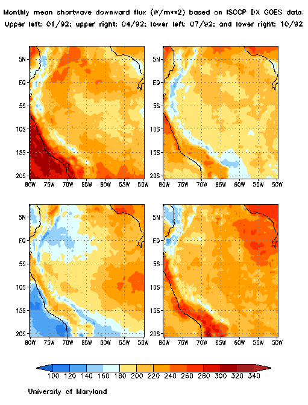
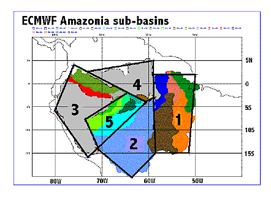

Initially, we will provide historical information on surface and top
of the atmosphere radiative fluxes, both on global and regional scales,
to help the modeling community synthesize their current hydrological models and improve their capabilities to test scientific issues of concern
to the hydrology component of LBA. Historical radiative fluxes will be
produced as part of an ongoing EOS
PATHFINDER activity. Under the current project, they will be prepared
to meet the needs of the LBA investigators.
New activities will be initiated to 1) improve existing capabilities to
derive surface and top of the atmosphere radiative fluxes by incorporating
unique conditions that exist over the Amazon Basin, particularly in respect
to deforestation and biomass burning; and 2) implement these improved methodologies
at spatial and temporal scales of interest to the hydrological and ecological
modeling community. This aspect of our activity will be directly related
to activities anticipated during the LBA experiment, and will utilize
results from the Ecology module of the LBA Project.
Specifically, we plan to improve the characterization of surface conditions
in the radiative retrieval scheme. We will account for effects of deforestation,
and also include better detection of smoke from biomass burning and thus more
accurate modeling
in terms of its aerosol effects. "Ground truth" on surface radiative fluxes
will be collected by independent investigators and used to test our algorithm
in this unique environment, where high quality ground truth is almost non-existent.
In the context of the list of LBA-Hydrometeorology research priorities,
the information that will result from this project will lead to consideration of
the following issues:
Priority topic 1: Global scale hydrometeorology
An example on the distribution of monthly mean surface shortwave radiative
fluxes for four mid-season months during 1992 are illustrated in Figure
1. They are given at a resolution of 0.5 degree, and are available at 3-hourly
intervals, on daily time scales. The area covered was selected to include
all the various basins, as illustrated in Figure 2 below.
Note: Feedback is requested from LBA investigators as to the
spatial coverage needed for their studies that require information on radiative
fluxes.
Figure 1.

Figure 2.
